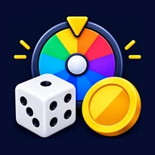
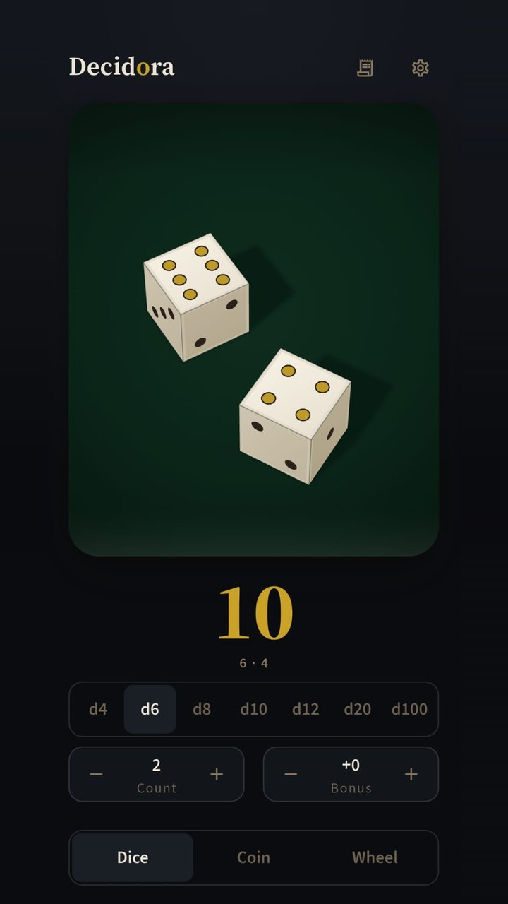
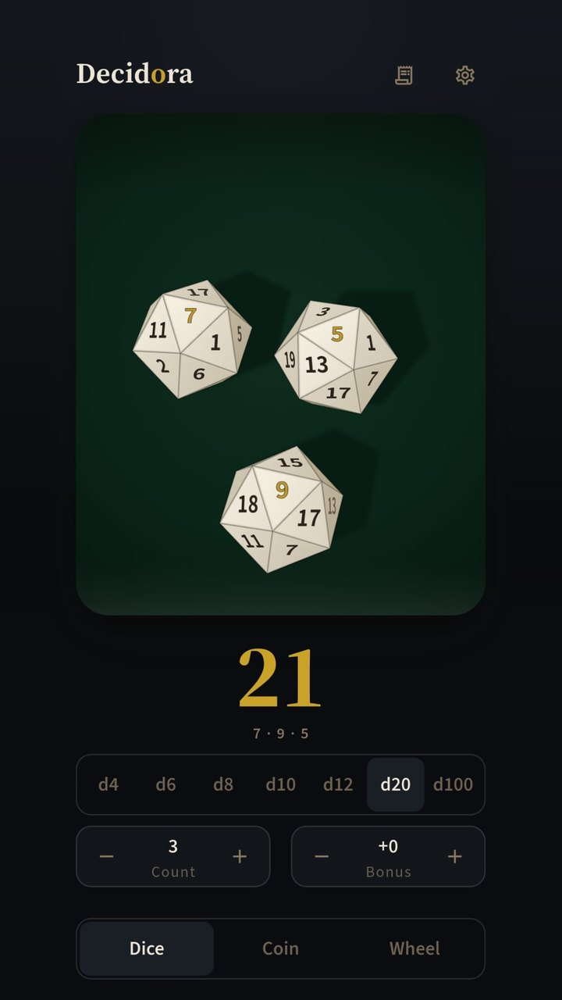
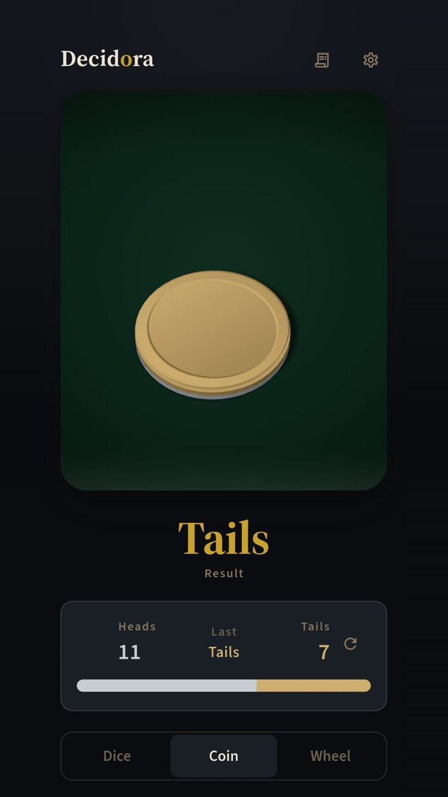

Saturday evening
What’s for dinner?
Six of us, six different ideas. Some nights this question takes longer than the meal.
The wheel says: Pasta.
Decidora makes small decisions like this in one tap. Dice, coin toss, wheel and finger picker in one app: free, no ads, no internet.
What I want isn’t on the wheel.
You write the options. If the list is sitting in a group chat, copy it and paste it in one go.
The bill arrives
Who’s paying?
The waiter left the bill and six hands went for six wallets. At our table this fight lasts half an hour.
Everyone put a finger down. Tonight the bill is on D.
It’s rigged.
It isn’t. The result comes from the phone’s secure random number source, and all four tools use the same one.
At home, over a board game
Where are the dice?
The box is open: board, cards, pieces, all there. No dice.
No problem: two dice, total 9. Game on.
This game uses three dice, though.
Roll up to six. You can even add a bonus to the total, like 3d8+2.
It’s getting late
One more round?
Half of us want another round, half of us want to go home. Deal: heads, we play; tails, everyone goes home.
Heads it is: one more round.
Best of three?
Sure. The app already counts how many heads and how many tails.
Everyone’s home
Tonight’s decisions went nowhere.
Decidora has no internet permission. It asks for no account and shows no ads; your decisions, wheels and settings stay on your phone.
- Price
- Free
- Ads
- None
- Account
- Not needed
- Permissions
- None
- Data
- On your phone
This site is the same: no cookies, no tracking code, nothing loaded from anywhere else. The full privacy policy
The next morning
Your turn.
A rehearsal of all four tools, right in your browser. The results are truly random, and everything you throw goes into the log under “Today”. Last night’s decisions are in there too.
Tap to roll
2d6
Tap to roll
Count
Bonus
Roll: 2d6 · Up to six dice at once (three for d100), bonus from −99 to +99.
What to eat 8 options
To pick
Everyone puts a finger down and holds still. When the fingers stop, Decidora picks.
Nothing is saved in this rehearsal; close the tab and the log goes with it.
Next Saturday
Same question again.
This time, keep Decidora in your pocket. It’s free on Google Play; look for this icon in the store.

FREEGet it on Google PlayThree screens from the app



Last questions from the table
- Does it cost anything?
- No. It’s free, with no ads.
- Do I need an account?
- No. Download it, open it, use it.
- Which languages?
- English, Turkish, German, Spanish and French. It follows your phone’s language, and you can switch in Settings.
- Is it on iPhone?
- Not for now: Android only, on Google Play.